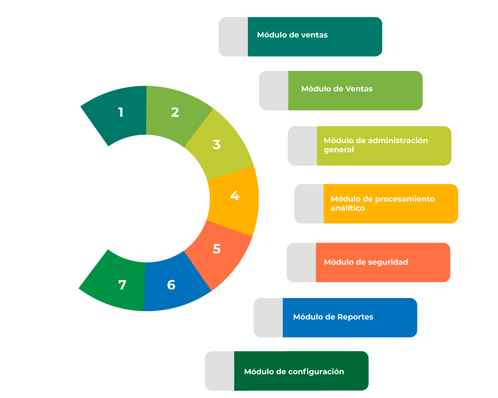

Saludos!!
Sistema Web Transaccional
Farmacia Saori
Puntos a Abordar
- Alcances y Limitante
- Requerimientos Minimos
- Casos de uso - Contexto General
- Base de Datos
Alcances
- El sistema llevará el control de los laboratorios que tiene como proveedores principales la farmacia.
- El sistema podrá registrar la factura de los productos y generarla físicamente.
- El sistema podrá llevar el control del inventario de los fármacos.
- El sistema tendrá alertas para los fármacos próximos a vencer.
- El sistema podrá permitir el pago en moneda nacional como extranjera.
- El sistema podrá realizar los reportes más indispensables para el negocio (venta, productos más vendidos, productos próximos a vencer, productos agotados).
- El sistema permitirá tener un control de los usuarios y brindará seguridad de los datos.
- El sistema registrará los pedidos a los proveedores.
Limitantes
- El sistema no realiza pedidos en línea.
- El sistema no contempla las ventas en línea.
- • El sistema no incluirá las ventas al crédito.
Requerimientos Mínimos
Entre los principales módulos tenemos:
-

Módulo de Ventas
Entre los Principales elementos tenemos:
Nombre del cliente, nombre empleado, fecha de venta, subtotal, descuento, IVA, total, nombre genérico, forma de pago, cantidad-venta, precio-venta
Reportes Generados en este módulo:
- Informe de venta General
- Informe Ventas Diarias, Mes, Rango
- Informe ventas por empleado
- Informe facturas anuladas
- Informe de venta por cliente
- Informe de devolución
Módulo de Compras
Entre los Principales elementos tenemos:
Proveedor, nombre fármaco, forma de pago, cantidad-compra, precio-compra lote, descuento, IVA y total.
Reportes Generados en este módulo:
- Informe de Compra
- Reportes semanales, mensuales o Rango
- Informe de devolución
Módulo de administración general
Entre las Principales acciones en el sistema:
Administración de Usuarios,Fármacos, Categorías, Clientes, Laboratorio y Proveedores
Reportes Generados en este módulo:
- Informe de fármacos
- Informe de proveedores
- Informe de categorías
- Informe de empleados, clientes
- Informe de laboratorios
- Informe de productos próximos a vencer
- Informe de productos vencidos
Módulo de procesamiento analítico
Contempla los modelos actuales de negocio, para la toma de decisiones a partir de:
Ventas, Compras, Transacciones, Stock y Facturas.
Reportes Generados en este módulo:
- Informe de productos más vendidos
- Informe de clientes con más compras
- Informe de transacciones recientes
Módulo de Seguridad
Este módulo contempla una gran complejidad por una serie de tablas y datos que se deben mantener:
Gestión de los inicios de sesión de los usuarios en el servidor SQL y los permisos de cada uno de los individuos es primordial ya que se basa en manipulación de contenido.
Reportes Generados en este módulo:
- Informe de seguridad
- Informe de accesos al sistema
- Informe de usuarios y roles
Módulo de Reportes
Desde este módulo se pueden diseñar y producir listados o Reportes basados en las diferentes tablas de la base de datos, mencionados anteriormente en cada módulo.
Reportes Generados en este módulo:
- Reporte de ventas
- Reporte de compras
- Reporte de Administración general